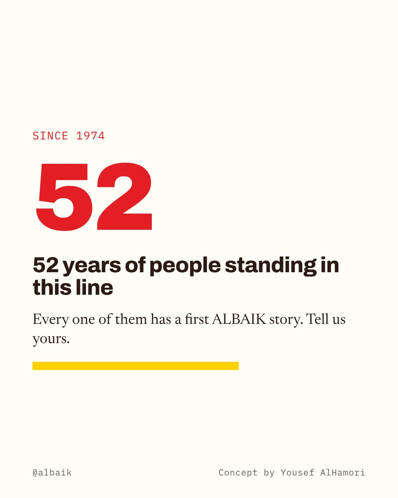
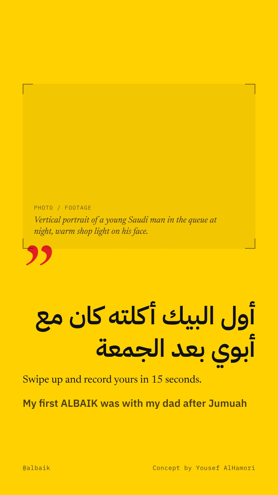
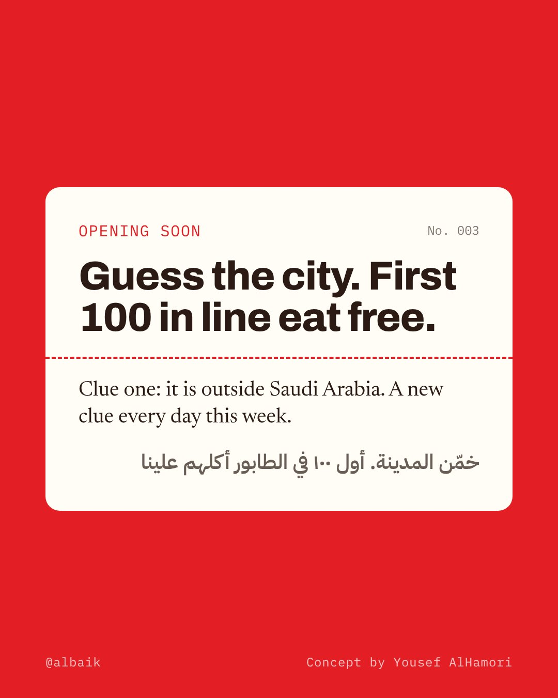

Fifty two years and the line is still here. Who was your first ALBAIK with? Tell us in 15 seconds. #QueueStories #حكايات_الطابور #ALBAIK
Since 1974 pillar. Frames the campaign as heritage and asks for the first entries.
ALBAIK queues are already a story; Queue Stories turns 50 years of loyalty into shareable memories.
ALBAIK queues, like the crowds at The Avenues opening in Kuwait, are moments people already talk about. This concept hands the camera to the line and asks one question: who was your first ALBAIK with? The answers build a heritage archive told by customers, which fits a brand whose mission is Available To All.
Unsolicited concept for portfolio purposes. I am not affiliated with ALBAIK; its name and trademarks belong to the brand. Facts in the audit come from the public sources listed at the bottom. Targets are proposed, not actual results.
Three posts from the campaign, each with the caption as it would go out and the job it does. In production the framed areas become real photography or footage.



What the brand already does well on social, and the openings this plan goes after.
Proposed target: 25,000 user generated Queue Stories videos tagged @albaik within 10 weeks.
Saudis aged 18 to 34 who film their food and tag friends before the first bite.
Everyone remembers who they were with the first time they ate ALBAIK.
Proposed target: 25,000 user generated Queue Stories videos tagged @albaik within 10 weeks.
Short vertical interviews with people in line: their first memory and who they are buying for.
Fan photos through the decades and long serving staff telling how the kitchen has changed.
Teasers and live coverage when ALBAIK opens in a new city or country.
Behind the scenes from the KAUST lab: drone tests, autonomous delivery and the people building them.
| Platform | Role | Cadence |
|---|---|---|
| Home of Queue Stories Reels and the Since 1974 archive | 4 Reels per week | |
| TikTok | Fast queue interviews and opening day coverage | 5 per week |
| Snapchat | Live Stories from opening day queues | Daily on launch weeks |
| X | Arabic first fan replies, opening announcements and queue updates | Daily |
Opens with the next new ALBAIK market launch, then runs into Hajj 2027, when pilgrims, a big source of ALBAIK word of mouth, are in the queues.
A film crew works the ALBAIK queue and asks one question: who was your first ALBAIK with? The answers become a series of short films and an archive of 50 years of memories told by customers.
How it spreadsAnyone in line scans a QR code on the queue barrier, records a 15 second answer and posts it with #حكايات_الطابور and @albaik. The best story each week wins a family meal and a spot in the main reel.
| Time | Visual | Audio / text |
|---|---|---|
| 0 to 3s | Wide shot of a long night queue outside an ALBAIK branch, phone screens lit along the line. | On screen text: كم صار لك في الطابور؟ |
| 3 to 8s | A young man in a thobe faces the camera, laughing. | VO, Hijazi: أول مرة كانت مع أبوي بعد صلاة الجمعة |
| 8 to 13s | An older woman holds a red and yellow bag and points at her grandkids. | VO: آكله من وأنا بنت، والحين أجيبه لأحفادي |
| 13 to 18s | A pilgrim family with luggage tags holds up a stack of boxes. | VO, English: We promised everyone back home we would bring some. |
| 18 to 24s | Fast cuts of trays sliding across the counter, garlic sauce cups, first bites. | Fryer crackle and counter calls as the beat drops |
| 24 to 30s | Back to the full queue from above, with text over it. | On screen text: Food of the people, since 1974. Tell yours: #حكايات_الطابور |
A two week calendar, the creators I would brief, and how the account answers people in the comments.
| Day | Platform | Format | Pillar | Post |
|---|---|---|---|---|
| W1 Sun | Reel | Queue Stories | First ALBAIK with dad | |
| W1 Mon | TikTok | Reel | Opening Hype | Clue one for the next city |
| W1 Tue | X | Thread | Since 1974 | Ask fans for their oldest ALBAIK photo |
| W1 Wed | TikTok | Reel | Next Kitchen | Drone test day at the KAUST lab |
| W1 Thu | Snapchat | Live Story | Queue Stories | Thursday night queue in Jeddah |
| W2 Sun | Carousel | Since 1974 | Fan photos through the decades | |
| W2 Mon | TikTok | Reel | Queue Stories | Pilgrim family stories |
| W2 Tue | Story | Opening Hype | Poll: guess the city | |
| W2 Wed | TikTok | Reel | Queue Stories | Grandmother and grandkids in line |
| W2 Thu | Reel | Opening Hype | Opening night queue recap |
| Tier | Creator type | Why them | The ask |
|---|---|---|---|
| Micro (10k to 50k) | Jeddah street interview creators | They already stop strangers on camera, and the queue gives them a ready crowd. | 3 Queue Stories interview videos filmed at a Jeddah branch |
| Mid (50k to 250k) | Saudi nostalgia and old Jeddah history accounts | Their audience saves archive content and would add family memories of ALBAIK. | 1 carousel on ALBAIK since 1974 plus 1 Reel asking followers for first memories |
| Micro (10k to 50k) | Gulf food reviewers in the next launch market | They bring local hype to an opening and explain ALBAIK to first timers. | Opening day vlog and 5 Story frames from the queue |
Proposed targets and the tests that would tell us what to change after week one.
| Metric | Target | Why it matters |
|---|---|---|
| Queue Stories submissions | Target: 25,000 in 10 weeks | Measures how many customers take part, the core of the idea. |
| Shares per Reel | Target: 3% of reach | Shares carry the stories into family group chats and abroad. |
| Comments on teaser posts | Target: 2,000 guesses per teaser | Shows opening hype is building before launch day. |
| Saves on Since 1974 posts | Target: 2% of reach | Heritage content is what people keep and come back to. |
Each major choice in this plan, matched to published research. Some studies cover the wider region or global audiences; the source says which. Full list on the research page.
Consumers are 2.4 times more likely to see user generated content as authentic than brand created content, and 79% say user generated content highly impacts their purchase decisions.
ALBAIK's strongest proof is its own queue, and customer clips read as more honest than any ad the brand could shoot.
Stackla (now Nosto), Consumer Content Report, 2019TikTok ads reached 38.6 million users aged 18 and above in Saudi Arabia in late 2025, the largest ad audience of any platform in the report (ad reach, not monthly active users).
TikTok has the widest ad reach among Saudi adults, so it is where Queue Stories can travel beyond people already near a branch.
DataReportal, Digital 2026: Saudi Arabia, 202580% of people trust the brands they use, and 73% say their trust in a brand would increase if it authentically reflected today's culture.
Telling the 1974 story ties ALBAIK to Saudi culture people already feel part of, which is the kind of brand trust this finding links to culture.
Edelman, 2025 Edelman Trust Barometer Special Report: Brand Trust, From We to Me, 202583% of global respondents completely or somewhat trust recommendations from friends and family, the most trusted form of advertising in the survey.
In a new market, a friend saying the queue is worth it carries more weight than a launch ad, so the plan builds launches around shared first visits.
Nielsen, Global Trust in Advertising, 2015Do real customer stories filmed in the ALBAIK queue earn more shares and saves than polished brand made food clips?
4 week A/B test on Instagram Reels and TikTok: Queue Stories customer clips versus studio food clips, posted in matched slots
16 posts (8 per variant) across two branches, about 200,000 combined views
Queue Stories clips earn at least 30% more shares per 1,000 views and 100 tagged #حكايات_الطابور entries by week 4